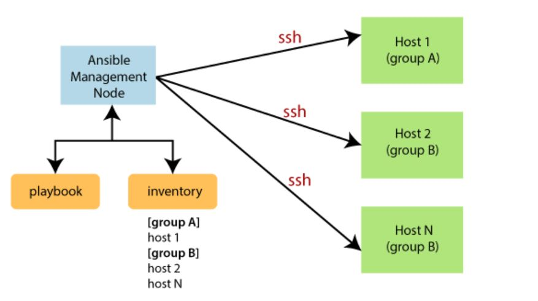

Imagine you’re in charge of a school concert, and you need to set up 100 classrooms with projectors, speakers, and lights. Doing it all by yourself for each room would take forever. So, you come up with
a clever plan. You make a checklist with every step like plugging in the projector, turning on the speakers, adjusting the lights, and handing it out to a team of helpers. You tell them to follow the checklist exactly,
and voila! All 100 rooms get set up super fast, the same way.
Now, think of DevOps as running a big project like this, but with computers. Instead of rooms, you have servers. Instead of projectors and speakers, you have software that needs to be installed and
configurations that need to be set. Here’s where Ansible comes in.
Ansible is like that checklist you made. It allows you to write down all the steps (called a "playbook") needed to set up a server or make changes to it. Once you have this playbook, you don’t need to
go to each server and do everything manually. You just run the playbook, and Ansible works across hundreds or thousands of servers.
So why is this important in DevOps? In a DevOps environment, things need to happen quickly and consistently. If you’re pushing out a new app or updating software, you can’t afford to spend hours
or days doing it by hand on each server. Ansible automates this process, so everything happens fast, without mistakes.
Just like your helpers followed the checklist and set up all the classrooms the same way, Ansible makes sure all your servers are set up the same, and it saves you tons of time! Plus, since everything
is written down in the playbook, you can always go back and see what’s been done, or easily repeat the process later. In short, Ansible makes life in DevOps easier by taking care of the boring,
repetitive tasks, so you can focus on the big picture, just like how your checklist made setting up the concert super smooth.
What is Ansible?
1. Ansible is an open-source IT engine that automates application deployment, cloud provisioning, intra-service orchestration, and other IT tools.
2. Ansible is easy to deploy because it does not use any agents or custom security infrastructure on the client side, and the work can be done by pushing modules to clients.
These modules are executed locally on the client side, and the output is pushed back to the Ansible server.
3. It can easily connect to clients using SSH-Keys, simplifying though the whole process. Client details, such as hostnames or IP addresses and SSH ports, are stored in the
files, which are called inventory files. If you have created an inventory file and populated it, then Ansible can use it.
4. Ansible uses the playbook to describe automation jobs, and the playbook, uses simple language, i.e., YAML. YAML is a human-readable data serialization language & commonly
used for configuration files, but it can be used in many applications where data is being stored.
5. A significant advantage is that even the IT infrastructure support guys can read and understand the playbook and debug if needed.
6. Ansible is designed for multi-tier deployment. Ansible does not manage one system at a time, and it models IT infrastructure by describing all of your systems are
interrelated. Ansible is entirely agentless, which means Ansible works by connecting your nodes through SSH (by default). Ansible gives the option to you if you want
another method for the connection like Kerberos.
7. Ansible pushes small programs after connecting to your nodes which are known as "Ansible Modules". Ansible runs that module on your nodes and removes them when finished.
Ansible manages the inventory in simple text files (These are the host's files). Ansible uses the host file where one can group the hosts and control the actions on a
specific group in the playbooks.

Why Use Ansible?
Here are some important reasons for using Ansible, such as:
1. Ansible is free to use by everyone.
2. Ansible is agentless and doesn't require anything special to be installed on the server, but just one thing you should have Python installed (python3 is preferable).
3. Ansible is very consistent and lightweight, and no constraints regarding the operating system or underlying hardware are present.
4. It is very secure due to its agentless capabilities and open SSH security features.
5. Ansible does not need any special system administrator skills to install and use it.
6. Ansible has a smooth learning curve determined by the comprehensive documentation and easy-to-learn structure and configuration.
7. Its modularity regarding plugins, inventories, modules, and playbooks make Ansible perfect companion orchestrate large environments.
Ansible History -
Here are some essential points from the history of Ansible, such as:
1. Michael DeHaan developed Ansible, and the Ansible project began in February 2012.
2. The creator of Cobbler and Func is also the controller of the Fedora Unified network.
3. RedHat acquired the Ansible tool in 2015.
4. Ansible is included as part of the Fedora distribution of the Linux.
5. Ansible is also available for RedHat Enterprise Linux, Debian, CentOS, Oracle Linux, and Scientific Linux via Extra Packages for Enterprise Linux (EPEL) and Ubuntu as
well as for other operating systems.